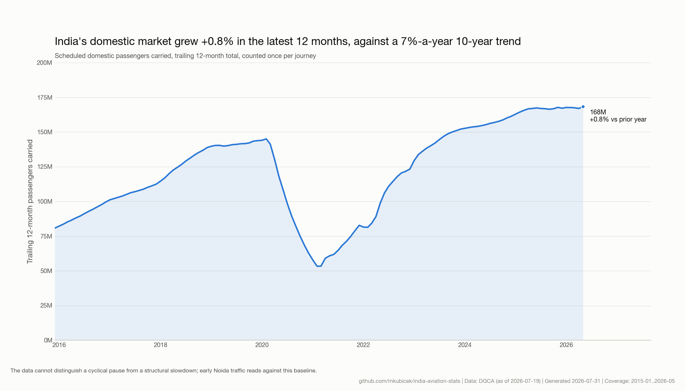
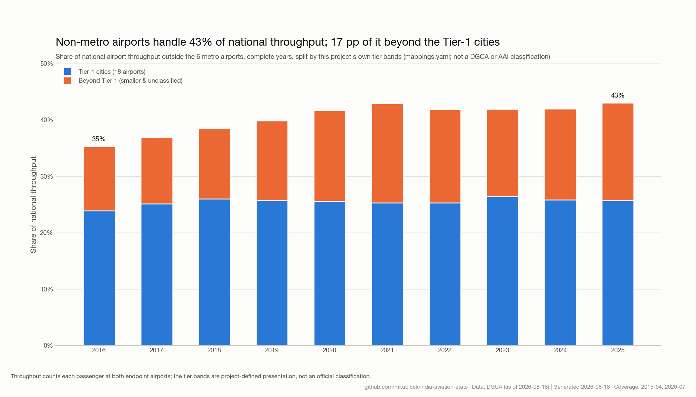
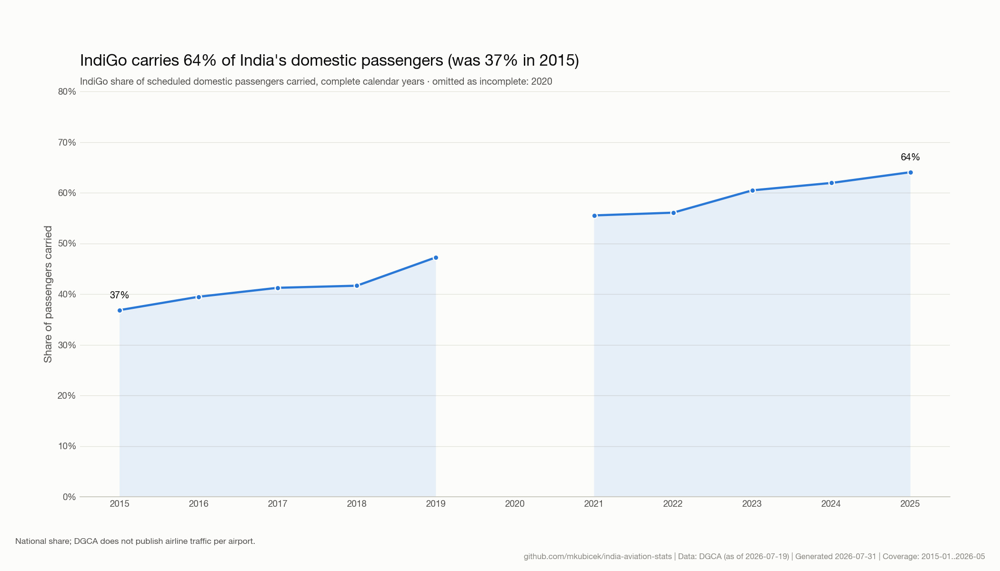
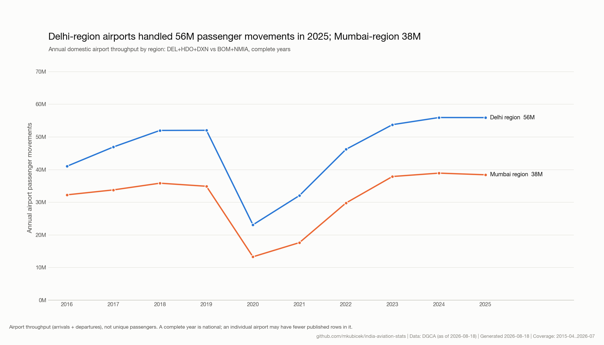
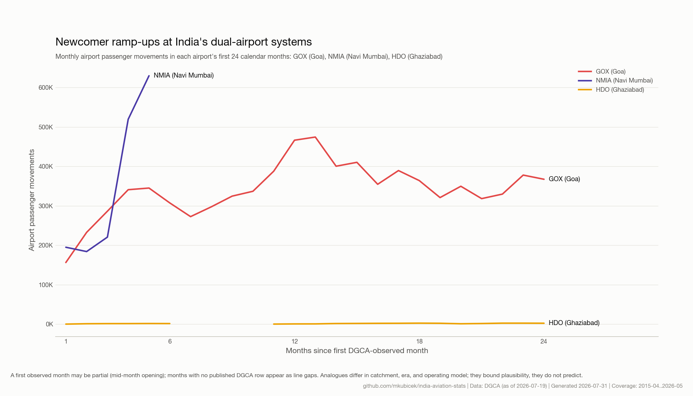
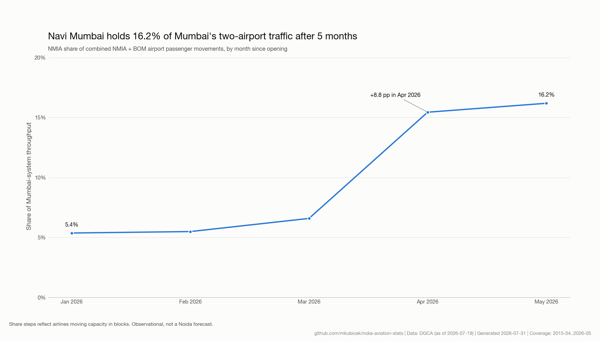
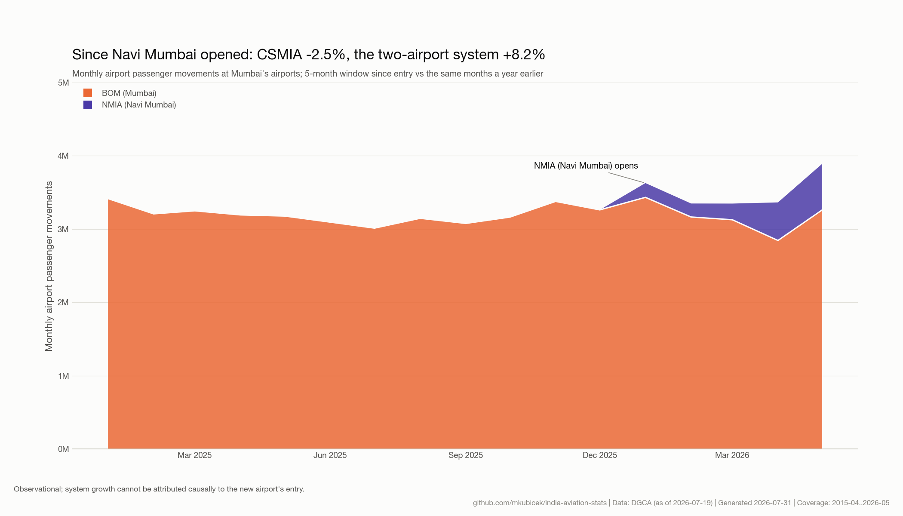
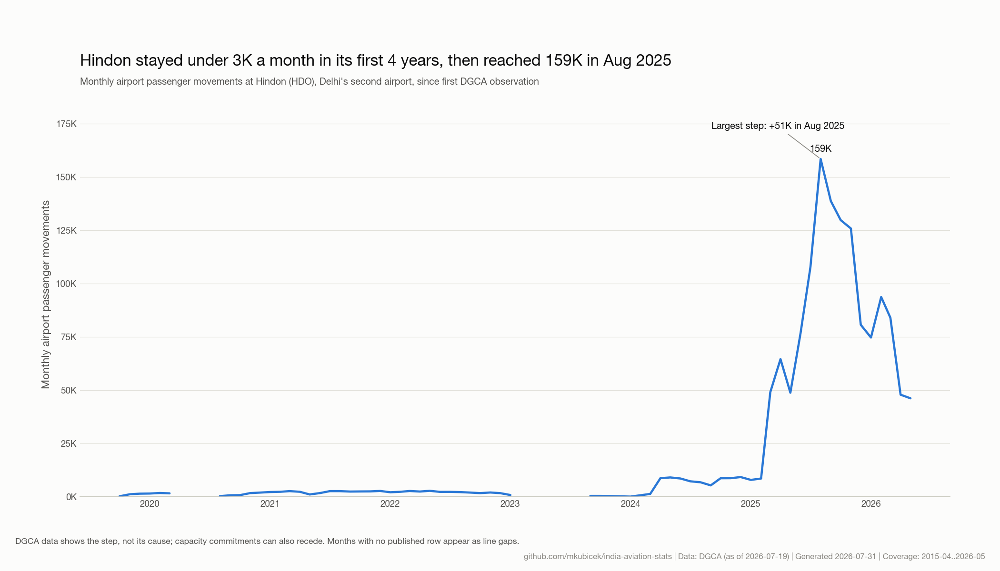

Noida International Airport (DXN) · DGCA data
The national market a new Delhi-region airport joins, the region it serves, and the ramp-up playbook written by India's other dual-airport systems. Every number is computed from published DGCA tables, every chart carrying its own caveat.
Every early Noida number reads against the national baseline. State it before someone else does.

Demand keeps spreading toward the kind of cities a second NCR airport can serve directly.

A new airport's ramp-up is, in practice, a negotiation with two airline groups.

The capital region's depth is the structural case for a third airport.

The bounding curves (scale-up, replication, flatline) frame first-24-month expectations.

Navi Mumbai is the live dress rehearsal: one number to watch every month.

What relief looks like: the incumbent flattens while the region grows.

Time does not ramp an airport; committed airline capacity does.
